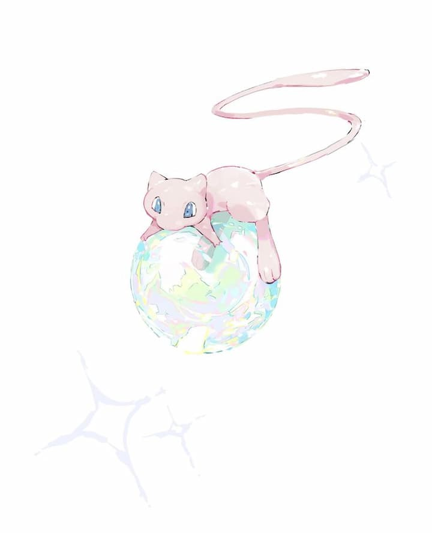

Desenvolvedor
Front-End &
Estudante de
Ciência da
Computação
Localizado em Goiânia 🌆

Localizado em Goiânia 🌆
Desenvolvo pequenos projetos como este portifólio utilizando apenas HTML, CSS e JavaScript. Para trabalhos e projetos acadêmicos desenvolvo minhas habilidades com C e Python.
Atuação no suporte técnico aos usuários, realizando manutenção de computadores, instalação de softwares e resolução de problemas de sistemas e rede, garantindo o bom funcionamento da infraestrutura de TI.
Minha mais recente experiência acadêmica esta sendo meu bacharelado🎓 em Ciência da Computação. Além disso me mantenho sempre atualizado com cursos intensivos online.